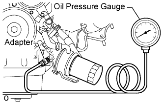

LUBRICATION SYSTEM > ON-VEHICLE INSPECTION |
| 1. CHECK ENGINE OIL QUALITY |
Check the engine oil for deterioration, water contamination, discoloration or thinning.
If the quality is visibly poor, replace the oil and filter (Click here).
| 2. CHECK ENGINE OIL LEVEL |
Warm up the engine, then stop the engine and wait for 5 minutes.
Check that the engine oil level is between the low level and full level marks on the dipstick.
If low, check for leakage and add oil up to the full level mark.
| 3. INSPECT AND ADJUST OIL PRESSURE |
Remove the oil pressure sender gauge (Click here).
 |
Install an oil pressure gauge with an adapter.
Warm up the engine.
Measure the oil pressure.
| Condition | Specified Condition |
| Idle | 29 kPa (0.3 kgf/cm2, 4.2 psi) or more |
| 3000 rpm | 294 to 588 kPa (3.0 to 6.0 kgf/cm2, 43 to 85 psi) |
Remove the oil pressure gauge and adapter.
Install the oil pressure sender gauge (Click here).